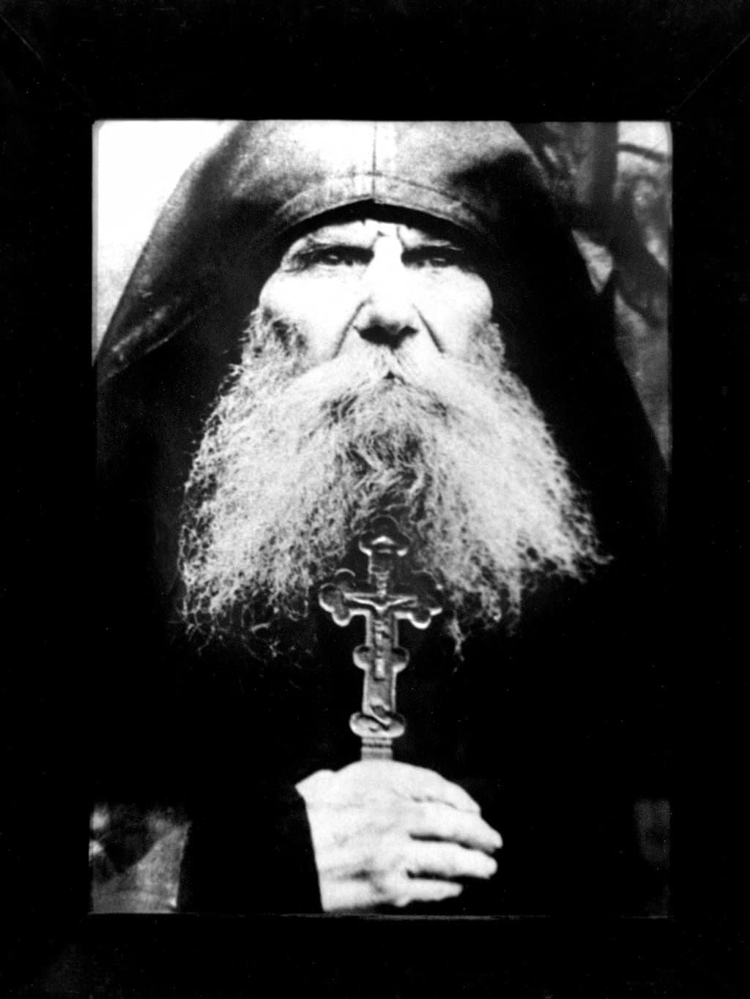

«Între toate acestea, în anul 1854, aflându-se oștile Imperiului Rusiei prin Principatul Moldovei, Părintele Arhimandrit și Stareț Nathanail le făcea ajutor după puterea mănăstirii; și cînd s-au dus la Silistra oștirile, atunci Părintele Stareț a dat din partea mănăstirii 10 care mari legate cu fier cu câte 10 boi, cu argați și cheltuiala mănăstirii, rânduind și un monah îngrijitor pentru ținerea acestora în bună stare; dar pe urmă întorcându-se oștirile ruse în țara lor, și în Moldova intrând oștile nemțești, atunci domnul Moldovei Grigorie Ghica a voit să-și izbândească asupra Mănăstirii Neamțului, pentru că a dat ajutor oștirii rusești pravoslavnice; și negăsind alte pricini, și citind paragraful al 5-lea din Așezământul Prea Cuviosului Părintelui nostru Starețul Paisie Velicikovski, unde hotărăște sfinția sa că „Monahii cei cărturari din soborul sfinției sale să citească învățăturile Sfinților Părinți, care povățuiesc drept spre înțelegerea Sfintelor Scripturi și spre cunoștința dogmelor credinței celei pravoslavnice a Bisericii Sobornicești”, și uitându-și dregătoria sa, că el era domn puitor la cale al pricinilor politicești iar nu arhiereu, a hotărât ca numaidecât punctul acesta este poruncitor spre a se întemeia în Mănăstirea Neamțului seminarie, pentru ca să învețe călugării științe înalte. Și îndată a și pus în lucrare, ca prin silnicie numaidecât să aducă întru îndeplinire pe acel punct după a sa socotință greșită și necreștinească.
Și așa uneltind el toate vicleșugurile, împreună cu Dimitrie Ralet, ministrul bisericesc și cu Lascarachi Catargiu și cu Constantin Negri și cu alți ajutători lui, după cum i-a învățat diavolul, a trimis mai întâi niște batjocoritori în Mănăstirea Neamțului în anul 1855, spre a-și face râs de locașul lui Dumnezeu, care, ajungând în mănăstire marți seara la începutul Sfântului și marelui Post, în vremea Pavecerniței celei mari, când mai tot soborul eram în soborniceasca biserică întru un cuget lăudând pe Dumnezeu și rugându-ne pentru mântuirea sufletelor noastre și pentru pacea lumii, după cum avem predanie, cântându-se atunci Canonul cel Mare, numai iată că am auzit cum au intrat niște boieri în mănăstire și pecetluiesc ușile la chiliile părinților celor mai însemnați de prin slujbele mănăstirii. Deci cu toții foarte spăimântându-ne, nu ne dumiream ce este, că așa fără de veste întru așa zile sfinte care sunt pentru curățirea sufletului se face acest lucru, când în țara Moldovei este domnitor creștin și nu se află nici o năvălire de oareșicare varvari; și după ce am ieșit din biserică, am văzut că așa este cu adevărat, căci umblau ca niște lei turbați de mânie prin farmalâcurile mănăstirii acei boieri, Lascarachi Catargiu, Dimitrie Ralet, și Priveghetorul din Târgul Neamțului, Neculai Pârvu, și Poliț-Maistru Ion Grigoriu, care arăta ușile pe care să le pecetluiască, și alții, înconjurând chiliile părinților cu ostași într-armați, și pecetluindu-le ușile precum am zis, așijderea și la soborniceasca cămară a mănăstirii și la cancelarie, la arhivă și la bibliotecă; și încă și la Părintele Arhimandrit Nathanail, Starețul mănăstirii, zicând că starețul ține în mănăstire spioni rusești. Întru acestea și întru altele încă și-au mai arătat neomenia, căci au adunat pe vreo câțiva părinți cinstiți și i-au închis într-o chilie la un loc, puindu-le strajă ca nu cumva să fugă; apoi după ce i-au ținut 24 de ceasuri acolo închiși la arhondaric jos, păziți de Poliț-Maistru cu ostașii, le-au dat drumul la unii, iar pe patru părinți cinstiți, după ce au despecetluit ușile care le pecetluiseră, văzând că nu au găsit nici o pricină ca să se încaiere de sobor, cu mare batjocură i-au pornit la Iași, nelăsându-i nici măcar să se închine la Sfânta Icoană cea făcătoare de minuni a Prea Curatei Maicii lui Dumnezeu, căci un monah Ionathan alergase cu fuga în soborniceasca biserică ca să se închine, dar chiar înaintea Icoanei Prea Curatei Maicii lui Dumnezeu ajungând, a alergat un radovoi cu șapca în cap și cu sabia la dânsul și l-a răpit cu cumpliție de acolo, și i-au pus pe toți întru o haraba, împreună cu două femei, ca desăvârșit să-și facă râs de călugări.

Deci cine poate să povestească batjocurile și necazurile ce au pătimit acei părinți pe drum, mai ales și vreme de seară fiind, asemenea și frica și grija soborului în mănăstire? Căci se vedea o pornire cu nemilostivire nu de la păgâni, nu de la eretici, ci chiar de la creștini patrioți și mai ales de la domnitorul pământului Moldovei, pentru care nu avem cui să ne jeluim, la cine să alergăm și pe cine să punem mijlocitor spre îmblânzire; fără numai după cum și întru altele primejdii este obiceiul soborului, a alergat cu rugăciuni la ajutorul Prea Curatei Maicii lui Dumnezeu rugându-se ei, spre a fi scutit de acea ispită negândită.
Căci de ar fi fost alții străini, apoi te jeluiai domnitorului; iar acestora acum se potrivea a li se grăi zicerea aceea a Sfântului Prooroc și împărat David, adică «Că de m-ar fi ocărât vrăjmașul aș fi răbdat, și cel ce mă urăște de ar fi grăit mari asupra mea m-aș fi ascuns de dânsul. Iar tu omule, cel întocmai la suflet dregătorul meu și cunoscutul meu, care împreună cu mine te-ai îndulcit în mâncări, în casa lui Dumnezeu am umblat cu un gând»; și iarăși rugăciunea lui către Dumnezeu și hotărâre, adică: «Să vie dar moartea peste ei și să se pogoare în iad de vii, că vicleșug este în locașurile lor» (Psalm 54), pentru că aceștia pe de o parte cereau rugăciuni ale soborului către Dumnezeu întru nevoile lor, iar pe de alta, cu vicleșug căutau prilej spre a risipi soborul, aprinzându-și mânia lui Dumnezeu pe capul lor, și neluând seama la cuvântul ce este scris, că «Pe cel ce va strica casa lui Dumnezeu, strica-l-va pe acela Dumnezeu» (Cartea I-a către Corinteni 3, 17).
Însă nelegiuiții aceștia nu s-au mulțumit numai cu atâta, ci ca să vezi ce grozăvii s-au mai lucrat și după acestea, că întru a treia săptămână a Sfântului și Marelui Post, a trimis domnul Grigorie Ghica pe un arhimandrit învățat, Antonie, cu poruncă de a scos din stăreție pe Părintele Arhimandrit Nathanail, pe lângă care trebușoară, tot atunci la februarie în 24 de zile acel arhimandrit a citit în trapeza sobornicească în fața soborului și niște ocări și îngroziri foarte aspre de către domnitor, și apoi s-a așezat el țiitor de loc al Starețului, alegându-și singur vreo șase nume din sobor care știau numai a iscăli ceea ce va zice el, sub nume de sfat al soborului, pentru ochii oamenilor, ca să poată aduce întru împlinire tot planul domnului Grigorie Ghica cu care tainic îl însărcinase, precum și zice în ofisul ce i-a dat în 2 martie, cum că toate chipurile să le facă spre a aduce întru împlinire deosebitele dispoziții cu care l-a însărcinat.
Deci în vremea acestui ticălos sfat prin vicleșug adunat, nimic însemnat nu se poate lămuri ce s-a lucrat în folosul mănăstirilor, decât spre cea de istov desființare a vieții călugărești. Aceasta cu multă părere de rău vi-o înfățoșez. Că netrecând multă vreme, a venit de la Iași la mănăstire un boier, anume Anastasie Panu, aducând și niște programe alcătuite gata, pentru înființarea seminarului în mănăstire; și iscălindu-le mai întâi acel arhimandrit Antonie, ca unul ce ținea loc de Stareț și ca unul ce nimic nu-i păsa pentru stricarea orânduielii călugărești, fiindcă nici el nu se ținea de dânsa, a mai silit și pe ieromonahii Dimitrie de la Oancea (ce nu era hirotonit din soborul nostru), Ghenadie Durăuanul și Teodosie Florea, și monahii Ieremia și Timotei de au iscălit, pe care îi alesese el singur ca spre sfat din partea soborului, prin care vicleșug a putut umple gazetele de minciuni, cum că soborul a cerut să fie seminar în mijlocul mănăstirii.
Deci isprăvindu-se această mârșavă faptă cu cele mai silnice chipuri (că și scaunul ridicase acel boier ca să dea în cap monahului Gherasim, logofătul cel mare al mănăstirii, pentru că nu a voit să iscălească), precum s-a înștiințat mai pe urmă soborul, a mers cu așa ispravă acel boier la Iași.
După acestea, netrecând multă vreme, a venit la mănăstirea Neamțului ministrul bisericesc împreună cu alții, și trăgându-se clopotul cel mare, spre a se aduna soborul în soborniceasca biserică, a mers și ministrul acolo, îmbrăcat întru toată uniforma sa și a început a ceti acele programe; dar bătut fiind nevăzut de Prea Curata Maica lui Dumnezeu, a început îndată a tremura din tot trupul foarte cumplit, încât nu a putut citi nici măcar 4 rânduri din acel program în fața soborului; și fiindcă se afla în mare primejdie, i-a luat altul programele din mână; și fiindcă se îneca de tot, i-a adus degrab arhondarul cel mare al mănăstirii un pahar mare cu apă rece, de l-a băut acolo în biserică ministrul unde înțepenise lângă strana arhierească în fața a tot soborul spre a-și mai veni ceva în fire; și așa a ieșit din biserică.
Și netrecând multă vreme, a trimis domnul Grigorie Ghica altă poruncă, ca Mănăstirea Neamțului să facă numaidecât cu a sa cheltuială în Târgul Neamțului sinagogă evreiască.
Și nevoind soborul a-i împlini această nelegiuită poruncă, el a trimis pe un boier spre execuție în mănăstire, ca să silească pe sobor spre a-i împlini citata poruncă, căruia boier îi plătea mănăstirea pe fiecare zi câte doi galbeni austrieci și la doi slujitori un galben pe fiecare zi, osebit de mâncare și de băutură pentru dânșii și pentru cai, vreme de trei luni de zile, până ce a pus mănăstirea 2.000 de galbeni cheltuială și osebit material, de s-a făcut sinagogă evreiască în ce chip au cerut evreii la domnitorul Grigorie Ghica.
Eu voiam ca pe acestea și alte tiranii ce s-au lucrat împotriva soborului să le cinstesc cu tăcere, dar însă mi-am luat de seamă cum că mai bine este a ști și urmașii că nu întru alt chip, ci cu acest fel de silnicii s-a primit seminarul în Mănăstirea Neamțului, prin care a venit și focul iadului în ea: putoarea tiutiunului și mâncarea cărnii – batjocoritoarele tagmei călugărești și defăimătoarele tagmei călugărești și Sfintelor Scripturi la iveală, care rele întrebuințări necinstitoare tagmei călugărești, precum am zis, măcar deși mai-nainte se aflau câte pe undeva, însă tainic, iar în timpul ocârmuirii arhimandritului Antonie te înnădușa fumul tiutiunului cînd intrai în chiliile stărețești. Această înțelepciune și luminare a minții, în loc de a Sfântului Duh, a intrat în soborul Sfintelor Mănăstiri Neamțu și Secu prin întemeierea seminarului. Căci cu pricina greutății claselor programului ce s-a pus de ministrul bisericesc pentru această seminarie, în ce chip pare-mi-se că nici întru o parte de loc prin prejur se va fi aflând au trebuit ca numaidecât prin silniciile ministrului bisericesc și prin îngrozirile cu surgunii și cu pierdere de istov a tuturor drepturilor mănăstirii să primească soborul măcar și nevrând pe Arhimandritul Dionisie Romano, cu numele cum că este starețul acestor mănăstiri pe care domnul Grigorie Ghica mai întâi l-a rânduit la aceste mănăstiri locotenent de stareț în locul Arhimandritului Antonie, după cum și însuși Prea Sfințitul Mitropolit Sofronie, la mai în 19 zile, anul 1855, a făcut cunoscut soborului despre aceasta. Dar el a stat în Târgul Neamțului până ce marele logofăt Gheorghe Sturza și cu beizadeaua Iancu Ghica și Grigorie Cozadin, cei ce erau rânduiți spre această lucrare, au silnicit soborul lavrei cu feluri de îngroziri ca să dea în scris cum că-l cere de stareț mănăstirea pe Dionisie, și încă cu rugăminte; precum și de seminar se zice că s-a rugat soborul ca să fie în lăuntrul mănăstirii, despre care cred că veți fi înțeles cum s-a rugat. Și așa la mai în 24 de zile, nefiind cu putință a scăpa din mâna silnicilor și făcându-se acest înscris de către sobor, ca rugându-se, după cum am zis, precum l-a dictat Iancu Ghica, apoi în 25 mai au făcut și acei boieri răspuns către domnul Grigorie Ghica cât de bine au isprăvit ei trebușoara aceasta, și între altele i-au scris și aceste laude, cum că prin chemarea părintelui Arhimandrit Dionisie, a zidit Grigorie Ghica din nou acest sfânt locaș și a întărit casa lui Dumnezeu, și a depărtat din ea pentru totdeauna necuviințele care au tulburat liniștea și au învăluit interesele ei, au scăzut averea ei și i-au adus și defăimare și altele. Iar după ce au așezat pe Arhimandritul Dionisie acei boieri în strana stărețească în soborniceasca biserică, apoi în cuvântul ce l-a făcut către sobor Gheorghe Sturza a zis între altele așa: cum că „Numai de la un asemenea bărbat se poate aștepta înflorirea acestor mănăstiri, întemeierea credinței, lățirea cunoștințelor, îmbunătățirea clerului și renașterea morală a întregii țări. Îmbrățoșați-l dar, dați-i ascultarea cuvenită…” și altele. Vai de noi! Vai de noi! Dar mai vai și amar de acei ce și-au pus nădejdea fericirii lor spre acest fel de om, care nici pe sineși nu se poate povățui spre mântuire! Apoi întorcându-se Gheorghe Sturza către Arhimandritul Dionisie i-a zis: „Primește această numeroasă turmă sufletească pe care părinteasca îngrijire a domnitorului o încredințează prin mine” și altele; iată cine încredințează pe soborul Lavrei Neamțului în seama Arhimandritului Dionisie… După aceasta a făcut și Arhimandritul Dionisie un cuvânt către sobor, în care între altele a zis așa: „Părinților și fraților, scopul mântuitor care a adunat pe toți petrecătorii în această sfântă mănăstire nimeni nu se poate îndoi că este mântuirea sufletului, petrecerea după poruncile și legea Domnului întru o viață neprihănită…” și altele; apoi a adăugat zicând: „Chem și rog pe toți bărbații iubitori de bine să se adune împrejurul meu: mă veți găsi gata la tot ce este bun și folositor; voi înlesni fiecăruia cu plăcere calea spre fapta bună, voi avea priveghere neadormită a întâmpina pe cât se va putea trebuințele duhovnicești și materiale ale fiecăruia cu ajutorul lui Dumnezeu, voi întinde mâna și voi ridica pe cel căzut, voi sprijini pe cel ce se poticnește, voi încuraja pe cel deznădăjduit și deprins din tinerețe cu suferințele, voi ști să sufăr cu cel ce suferă, să rabd cu cei ce pătimesc, să plâng cu cei ce lăcrimează…” și altele.
Vedeți, iubiților cititori și cunoașteți că cuvintele lui ar rămânea să fie de om dulce la cuvânt și îmbunătățit, și care l-ar durea inima și și-ar pune sufletul pentru mântuirea sufletelor omenești și pentru cinste și îmbunătățirea unei așa de mari lavre; dar fiindcă cuvintele Mântuitorului sunt foarte adevărate, pentru aceasta, ca să aibă ele și mai mare tărie, zice că «Cerul și pământul vor trece, iar cuvintele mele nu vor trece» (Marcu 13, 31), apoi iarăși zice: «Amin, amin grăiesc vouă, cel ce nu intră prin ușă în staulul oilor, ci sare pe aiurea, acela fur este și tâlhar» (Ioan 10, 1). Deci este cunoscut cum că Arhimandritul Dionisie a intrat stareț acestor sfinte mănăstiri nu prin ușă, cu buna voință a soborului, căci nici nu-l știa soborul bine cine este, ca să-l ceară de stareț; și pentru aceea nici nu a urmat ca un stareț, potrivit chemării sale, după cum veți vedea: că în 5 zile ale lunii lui iunie s-a pus stareț soborului cu chipul care s-a arătat, însă încă până a nu se ridica în scaunul stăreției, cum a intrat în mijlocul acestui sobor, ca un lup îmbrăcat în piele de oaie, fără a se sfătui cu cineva din părinții soborului, îndată a început a sfărâma zidirile ctitoricești, după împuternicirea ce zicea el că are de la domnul Grigorie Ghica, încât puțin de nu a rămas Mănăstirea Neamțului, în scurtul timp al stăreției lui, ca o urâciune a pustiirii.
Iar Părintele Arhimandrit și Stareț Nathanail, după scoaterea sa din stăreție în anul 1855 februarie în 24, mai liniștindu-se la chilie până la sosirea în stăreție a acestui Dionisie, acesta în grabă l-a izgonit din sobor cu mare neomenie și a umblat zbuciumându-se din loc în loc până în anul 1856, când, atunci, în luna lui mai, aflându-se la o moșie a mănăstirii, anume Oancea, acolo foarte tare s-a bolnăvit; și împărtășindu-se cu Sfintele și de viață făcătoarele lui Hristos Taine, s-a mutat către Domnul când îi citeam eu rânduiala la ieșirea sufletului, mai în 29 zile, marți, în săptămâna a șaptea după Paști, și s-a îngropat în pridvorul soborniceștii biserici a Mănăstirii Neamțului. Încă să se știe și aceasta, că școala publică din Târgul Neamțului o a zidit Părintele Arhimandrit și Stareț Neonil, cu așa hotărâre, ca să se învețe copiii învățături bisericești, și profesorul să fie față duhovnicească, călugăr, iar nu politicească, nici măcar preot de mir; și așa a urmat din anul 1853, de când s-a înființat, până în anul 1855, mai în 20 zile, neamestecându-se ministrul bisericesc întru nimic în trebile acestei școli, iar atunci îndată și-a aflat loc ministrul prin Arhimandritul Dionisie, când încă nici nu intrase stareț, și când încă nici măcar locotenent de stareț nu intrase el pe poarta mănăstirii, că voind să se îmbuneze a arătat ministrului bisericesc că acea școală se afla foarte în proastă stare; însă el s-a lăudat că intrând stareț o va îmbunătăți.
Totodată, cum a intrat stareț, a și început a trimite la ministru catalog pentru cei ce învață și a cerut ca să se trimită de acolo om la examen, apoi a tocmit tot el și profesori mireni la această școală, cărora pe toată luna le dădea mulțime de bani leafă din cămara mănăstirii, și slugile lor așijderea erau tocmite tot de către mănăstire cu însemnat condei de bani leafă pe fiecare lună, și osebit de casă și de alte înlesniri ce li se făcea de către mănăstire, și de masă, care cu zacuscă cu tot trebuia să fie de 4 ori pe fiecare zi și aceia nu mai prost, fără numai de cărnării, unturi și pește, măcar de ar fi fost și în zi de post; apoi mai trebuia încă pe fiecare lună ca să cheltuiască mănăstirea vreo 300 de lei pe cafea, dulceți și ceai, tot pentru dânșii.
După aceasta, așezând și școala primară și gimnaziul în Tîrgul Neamțului, a amăgit prin îngroziri viclene pe unii din părinții soborului, de au iscălit un jurnal, pe care le știa cum l-a alcătuit pentru acea școală, speriind pe părinți că dacă nu vor iscăli, apoi în puțină vreme va fi plină mănăstirea de copii la acea școală, căreia i-a și scos el hrisov deosebit, măcar că tocmai cum a voit să-l scoată nu a putut, fiindcă părinții duhovnici ai soborului, simțind această lucrare, au protestat pe la locurile cuviincioase, și el, văzând că nu a putut scoate hrisovul în ce chip a voit, a început a îngrozi cu surgunii pe părinții cei ce au protestat, aducând spre a-i îngrozi pe Constantin Negri la mănăstire, însă nu a isprăvit nimic. Deci adunându-se copii la acea școală, a îndatorit el pe cămara mănăstirii ca să-i caute cu toate cele trebuincioase, precum cu mâncare bună, cum porunceau profesorii, cu haine bune și cu încălțări, cu cărțile, cu hârtia, cu condeiele câte le trebuiau și altele, încât osebit de tot ajutorul putincios al mănăstirii, numai într-un an am cheltuit și bani cu ținerea acelei școli mulțime de mii de lei.
Iar Arhimandritul Antonie, care fusese locotenent de stareț și iscălise programele, după ce s-a dus de la mănăstire, netrecând multă vreme, îndată a înnebunit și a și orbit, însă Arhimandritul Dionisie cu tovarășii și partizanii săi nimic nu au luat în băgare de seamă aceasta, ci prin silniciile cu care au putut au pus în lucrare și au vârât seminarul deasupra soborniceștii trapeze. Și ministrul bisericesc a trimis rector la această seminarie din partea sa, hotărând mănăstirii ca pe fiecare an, osebit de casă, de masă și de altele, să-i dea leafă câte 200 de galbeni austrieci, și osebit 1500 de lei de cheltuială, pentru că a venit din țara nemțească în Moldova. Apoi a mai trimis ministrul bisericesc și alți profesori la acest seminar, cărora însuși Arhimandritul Dionisie le-a rânduit leafă cât a voit, osebit de masă și de alte înlesniri. Și așa din început s-au fost pus 140 de elevi, și din atâția rămăseseră într-o jumătate de an 4 elevi și 5 profesori, și pe urmă a picat și podul soborniceștii trapeze, peste care era întemeiată seminaria.
Iată că întru acest chip s-a așezat seminarul în lăuntrul Mănăstirii Neamțului, precum am zis, iar nu prin cererea a tot soborul, precum tot se încurcă de cei care caută pricini spre dărâmarea soborului. Care bine să știe că minciuna, orișicum o ar învârti, tot minciună rămâne, și de diavolul – tatăl minciunii – își vor avea parte aceia ce voiesc prin minciună a întuneca adevărul, că așa zice și Sfântul Prooroc David: «Pierde-vei pe toți cei ce grăiesc minciună».
Între aceste, Arhimandritul Dionisie, pentru pravila soborniceștii biserici, care din predanie de la Prea Cuviosul Părintele nostru Stareț Paisie Velicicovschi s-a păzit până acum nerășluită, el nu numai că nu a mers la dânsa adeseori, după cum i se cuvine unui stareț a fi întru toate pildă soborului celui căruia i se numește ocârmuitor, ci încă pizmuind celor ce mergeau, s-a făgăduit că o va reforma, dovedind această greșită socotință a sa și în fața lumii, căci în anul 1856, în ziua de luminatul praznic al Înălțării Domnului nostru Iisus Hristos, fiind farmaclâcurile mănăstirii și ograda pline de boieri și de tot felul de norod din toate stările, a trimis de a chemat din Dumnezeiescul Altar pe eclesiarhul cel mare al mănăstirii, când avea cea mai multă treabă – fiindcă liturghisea cu arhiereu, unde trebuia să stea nedepărtat de el – și cum a ajuns eclesiarhul în cerdacul stăreției noi, sus, fiind de față și arhondarul cel mare al mănăstirii, a început a răcni cât un leu la eclesiarhul, zicând că „Ce sunt acestea?” și de ce huiesc clopotele atât de mult, și de ce treabă facem atâtea sfințiri de apă și masle? Și pentru ce s-a mai cântat Acatistul în soborniceasca Biserică și Paraclisul și sfințirea apei în ziua de praznic, că cu acestea numai cât se lungește pravila în zadar; și încă a mai adăugat zicând că călugării Mănăstirii Neamțului acestea le-au făcut numai ca să amăgească norodul; însă să nu mai gândească una ca aceasta, căci s-au trecut cele de demult, și lumea s-a civilizat, și cele de ieri astăzi nu se mănâncă. Că Hristos șade în ceruri, iar pământul s-a dat oamenilor ca să facă ce vor vrea; și dacă călugărilor le trebuiesc acatiste, paraclise și sfințiri de apă, apoi să și le facă prin chilii, iar să nu îngreuieze norodul cu acestea. Și altele multe vorbe putrede necreștinești i-a mai zis ca un dascăl parizian. Iar eclesiarhul pe toate acestea auzindu-le nenădăjduind din gura aceluia care se numea stareț – și care ar fi trebuit să se bucure, văzând că el nu știe nimic din rânduiala mănăstirii și că călugării se silesc și țin predaniile Părintești, și încă să-i ajutoreze și să-i încurajeze spre acestea, dar nu să le împuțineze râvna cu ale sale răcnete – fiindcă avea treabă grabnică în Dumnezeiescul Altar numaidecât, precum am zis, nu a răspuns alta nici un cuvânt, ci precum pururea le este obiceiul călugărilor, lăsând acestea la purtarea de grijă a Prea Curatei Maicii lui Dumnezeu, nu s-a uitat la bârfiturile lui, ci a cerut iertăciune și a alergat în biserică. Pe care cuvinte seci și necreștinești le-a mai poftorit și în fața arhiereului ce liturghisea și a altor fețe cinstite zicând că cu acest fel de prelungire a rugăciunilor a făcut mare osteneală și arhiereului, ca și cum acestea le-a săvârșit soborul numai atunci, iar nu și în toți anii, fiindcă el nu știa rânduiala mănăstirii, și nici nu avea sfătuire pentru aceasta cu părinții duhovnici ai soborului, care știau. Și așa s-a și lăudat atunci de față că pentru altă dată o va regula el rânduiala; dar nu i-a ajutat Prea Curata Maica lui Dumnezeu spre a-și împlini acest scop păgânesc.
În vremea când a intrat stareț, țintirimul bisericii Sfântului Ioan Bogoslovul, unde se îngropau toți acei ce se trec din această viață întru acest sobor, era bine îngrădit cu zaplazi împrejur și drănițit, iar el a poruncit de l-a stricat și a mutat gardul mult în lăuntru, lăsându-l descoperit și nepuindu-i porți, ca spre batjocorirea credinței noastre pravoslavnice, osebit de mormânturile părinților și fraților ce au rămas afară de țintirim și altele, peste care a făcut el o șură mare, și le calcă carele și dobitoacele. Dar, încă, și acele din lăuntru să nu rămână în pace, ci să le calce bivolii, caii și alte dobitoace, care au stricat și au călcat pe prea cinstitele cruci ce erau puse după obiceiul creștinesc pe la mormânturile morților. Încât ne era mai mare jalea privind acestea. Ba, încă, nici bolnița cea pentru cei smintiți la minte nu a lăsat-o în pace, că a stricat bașcele de acolo, unde se închideau cei care erau tare nebuni, și șurile unde se adăposteau spre aerisire, vara, neputincioșii și cei îndrăciți. Asemenea și gardurile, nefăcând mai-nainte altele. Și așa, din această pricină, mulți din aceia care erau tare nebuni, neputându-se opri de vreun gard, se duceau prin pădure, și acolo cu mare greu îi găseau părintele Pamfil monahul, nacealnicul acestei bolnițe, morți.
Istorisind, noi, pe rând, pe toate necazurile și pagubele pe câte le-a pricinuit acest arhimandrit mănăstirii și soborului fraților, apoi, atunci, gândesc că ar trebui să se alcătuiască o carte foarte mare. Căci nu era îndestulat el că făcea mare necaz părinților ce erau rânduiți prin slujbele obștești, pentru că iconomului celui mare îi pusese un mirean, cu nume de agricultor; vivliothicariului, iarăși mirean vivliothicar; grădinarului, botanic mirean. Dechiilor pe la moșii, osebit de vechilii cunoscuți de așezământ, le mai pusese și alți vechili și revizori. Asemenea, și în Târgul Neamțului, la ospitalul cel mare al mănăstirii, după ce a alungat cu mare batjocură de acolo pe ieromonahul Theofan inspectorul, apoi, osebit de doctorii cei mai-nainte rânduiți, a mai rânduit și el alt doctor, revizor, pe Costache Vârnav. Și în chiliile stărețești ținea vreo câțiva mireni, cu nume de directori, secretari și logotheți, care toți unelteau împreună cu dânsul tiutiun. Încât, când te apropiai de chiliile acelea, nici nu puteai să mai zici altceva, decât că este o cafenea acolo; că de departe te înnădușa tartariceasca putoare a tiutiunului. Încă și bucătar își avea la stăreție, tot mirean; pentru că bucatele călugărești nu îi plăceau. Și pentru aceea nu a șezut vreodată cu frații soborului în trapeză la masă, întru toată vremea stăreției sale. Și acestor mireni, osebit de leafa ce li se da din cămara mănăstirii cu porunca lui, și altele lucruri trebuitoare, cu prisos, dar încă le da voie de mergeau și pe la metoacele mănăstirii, și își luau porci, pâine, grâu, popușoi, orz, ovăs, fân, legumi și altele.
El în anul 1856, luna lui ianuarie întâia zi, fiind cu mitra arhimandrițească în cap și îmbrăcat cu mantie arhierească, deasupra soborniceștii trapeze a mănăstirii, unde înființa seminarul, în fața a tot soborul și a ministrului bisericesc și a altor boieri, în cuvântul ce l-a grăit el atunci către sobor, între altele bâiguieli a zis mai rostit așa: „Mie să nu-mi zică nimeni din călugări că «am venit la mănăstire să mă mântuiesc»; aceasta nu voi să o aud”… și altele.
Deci mai primind și 791 de lei și 32 parale de la jugăritul moșiei Vânători, și 777 de lei din pădurea Lipovei și 5.180 de pe zece fălci de pădure de pe moșia Groșii, și 1.850 de lei pe cinci fălci de pădure de la Alecu Catargiu și 4.273 de lei 20 parale de la metocul Sfântului Gheorghe a moșiei Năniești, și 7.400 de lei milă de la Iancu Adamachi, 5.810 lei de la ierodiaconul Gheorghe, 4.420 lei de la duhovnicul Ilarie din Mănăstirea Secu, 2.590 lei de la boierii Brânzești din Târgul Frumos, 1.700 lei de la ieroschimonahul Conon, 1.480 lei de la Dimitrie Paraschiv, 1.000 lei de la Constantin Hermeziu, 7.877 lei tot mile hărăzite soborului și 2.437 lei i-a primit prin ieromonahul Andronic, eclesiarhul cel mare al mănăstirii numai de acei ce s-au trecut și în pomelnicul mare; iar care bani mai întrecea de la privegheri sau panahizi, și acei de pe sărindarele ce le da creștinii, nicidecum nu este știut câți a primit; și încă a mai vândut și mulțime de locuri ale mănăstirii și ceara din Târgul Neamțului, fără să arate când a luat, ca să nu mai știe soborul ce face el.
Și nemairăbdându-l milostivirea lui Dumnezeu și Prea Curata Maica lui Dumnezeu, apărătoarea și nerușinata nădejde a noastră, a aprins foc al râvnei casei lui Dumnezeu în inima Prea Sfințitului Mitropolit al Moldaviei Sofronie, care cunoscând că soborul nu are putere, măcar de ar și ști ce să facă, mai ales când a simțit că a vândut mulțime de locuri ale mănăstirii fără să știe soborul, sau măcar economul, sau cămărașul, și nici n-a încârnit în cămara mănăstirii acei bani, atunci a rânduit o comisie de fețe duhovnicești la mănăstire, ca în fața soborului să se vadă adevărul. Dar el cât a putut s-a silit de s-a dus acea comisie nelucrătoare, arătând încă și oareșicare prihăniri asupra mitropolitului și a tuturor arhiereilor Moldaviei către domnul Grigorie Ghica. Între altele încă mai avea el și acest obicei, de zicea câteodată că cât va ține guvernul cu dânsul, atâta va stăreți, iar când va vedea că guvernul nu-i ajută, nici îi ține în seamă, atunci ne lasă dracului și se duce, care cuvânt când îl auzeam zicând așa acel ce se numea că ne este stareț, foarte greu ne cădea; el când vedea crucea starețului Neonil cea cu cavaleria Sfintei Ana clasa a doua, striga în fața tuturor, ocărând pe eclesiarhul cel mare, ca să nu o mai scoată în vederea norodului, căci este cruce rusească. Iată ce fel de minte deșartă avea acest ticălos arhimandrit. Deci se înțelege că s-au auzit aceste toate și pe la Iași. Și chiriarhia țării, ca ceea ce privește spre totbinele îndeobște al mănăstirilor, cum s-a mazilit domnul Grigorie Ghica și a mers la Paris de s-a împușcat singur, îndată socotind și având grijă ca nu cumva să fugă încotrova Arhimandritul Dionisie – după cum am zis că se și lăuda fără de a-și da răspuns cum a dispozat averea mănăstirii, a trimis la 8 zile ale lunii lui iulie, anul 1856, poruncă la duhovnicii soborului Lavrei Neamțului spre a nu da nimic, nici o ascultare Arhimandritului Dionisie, totodată hotărând soborului ca să-l țină în cea mai de aproape priveghere, ca unul ce întru totul și-a călcat datoriile de stareț. Deci sosind acea adresă noaptea spre 10 zile ale lunii lui iulie, au mers egumenul Mănăstirii Secului împreună cu alți părinți la chiliile stărețești; și înțelegând de la casnici că este dus – precum adeseori avea acest obicei a mânea pe aiurea fără să știe soborul unde este –, i-au pecetluit ușile chiliilor, și apoi cercând l-au aflat la Mănăstirea Văratecul, de unde pornind nu a voit să vie la mănăstire precum era chemat, ci mergând s-a așezat la un mirean în Târgul Neamțului. Și de multe ori i s-a făcut chemare de către sobor ca să vie să șadă la mănăstire, dar el însă nu a voit să vie, ci ședea acolo și mânca carne, împreună cu Grigorie Cozadin și cu un ucenic al său, în toată vremea Postului Adormirii Prea Curatei Maicii lui Dumnezeu, precum a spus însuși acel ucenic, nefiind întrebat de cineva, care nu i se cuvine lui să o mănânce nici în câșlegi, necum în post. Și așa chibzuindu-se că dacă nu voiește să vie la mănăstire, negreșit că și plănuiește a se duce undeva, după cum se lăuda înainte, precum am zis, s-a însărcinat de către sobor un părinte și cu doi rândași în ulițele târgului, ca să ia seama, când se va duce să dea de știre la mănăstire încotro a apucat; iar altfel de instrucții nu li s-a pus, și care așa au și urmat, nimic mai adăugând.
Dar Arhimandritul Dionisie a trimis jalobă la căimăcămie și la Prea Sfințitul Mitropolit, tânguindu-se că este arestuit cu mare urgie de către sobor în Târgul Neamțului, și se ruga să-l slobozească din acea arestuire. Și prin partizanii săi veniră de la Piatră Gheorghi comandirul de jandarmi cu armașul cu vreo 30 de ostași la mănăstire; și punând ostași prin cerdacurile mănăstirii cu armele în mâini, ca să îngrozească pe sobor să trimită rugăminte în scris către Arhimandritul Dionisie, cum că-l roagă să vie iarăși să fie stareț mănăstirii, soborul nu s-a îngrozit nimic, ci a hotărât că nici nu voiește să-l mai vadă în mijlocul său. Și după ce prin vreo câteva scrisori către sfatul soborului nu au isprăvit nimic acei boieri, apoi s-au dus, lăsând în urmă mulțime de laude îngrozitoare asupra sfatului soborului.
Deci unii din părinți se cam îngrozeau văzând atâtea cumpliții lucrându-se prin partizanii lupului celui ce voia a intra iarăși în staul; dar însă cu nădejdea întru ajutorul Prea Curatei Maicii lui Dumnezeu s-au îmbărbătat, și așa, deși «certând ne-a certat Domnul, dar morții nu ne-a dat» – că prin mila și înțeleapta punere la cale a înaltului guvern și a Prea Sfințitului Mitropolit, împreună și a iubitorilor de Dumnezeu arhierei ai țării Moldaviei, care pururea se silesc pentru binele și întemeierea iubitei patrii – s-a trimis la mănăstire, la fața locului, o înaltă comisie, politicească și bisericească. Și din partea bisericească au fost Prea Sfințiții Arhierei Nectarie Sotiriopoleos, locotenent Episcopiei de Roman, și Meletie Istrati, Episcop Hușului; osebit de aceștia au mai fost și Arhimandritul Nicon, egumenul Mănăstirii Bisericani. Iar din partea politicească: marele logofăt Grigorie Crupențchi, adjutantul domnesc Petru Schilete și alții.
Și foarte cu luare aminte, lucrând aceste cinstite fețe fără părtinire și înfățoșind pe Arhimandritul Dionisie cu părinții soborului, asemenea și jaloba soborului cu ale lui alăturându-le, toate îndreptările lui bine s-au adeverit că nu au fost așa în ce chip le spunea pe hârtie. Și apoi văzând el cum că în loc să se folosească, mai tare se încurcă cu înscrisurile lui cele dăscălești pe care le dădea ca spre răspuns comisiei la întrebări, a fugit pe taină noaptea din mănăstire, fără știința soborului și a comisiei, și s-a ascuns la Grigorie Cuza (care pe câinii din ograda sa îi avea pe numele Sfântului Nicolae, a Sfântului Gheorghe și a altora; se vede că cel asemenea pe cel asemenea iubea, căci și în vremea comisiei veniră la mănăstire împreună cu Vasilie Bucșinescul, și după cât puteau ajutora ca să intre Dionisie iarăși stareț, măcar pe vreme de două săptămâni, dând bani și rachiu pe la unii din cei mai neputincioși frați, dar însă nimic nu au isprăvit).
Deci lucrând cu frica lui Dumnezeu și cu înțelepciune acei cinstiți comisari, și cunoscând bine nevinovăția soborului, au arătat către înalta ocârmuire toate pe larg; iar înalt Prea Sfințitul Mitropolit, înconjurat de clerul țării Moldaviei, voind ca și în viitor să nu mai poată acest arhimandrit a tulbura liniște soborului Sfintelor Mănăstiri Neamțu și Secu, au încheiat un jurnal în același an 1856 luna august în 18 zile, sub nr. 1246, în care între altele se hotărăște ca niciodată să nu mai poată fi Arhimandritul Dionisie povățuitor turmei cuvântătoare și la asemenea sfințite așezăminte, ca să nu mai adauge defăimare treptei prin asemenea osândite urmări. Apoi după aceasta, ocârmuirea bisericească împreună și cea politicească, socotind ce este de folos și mai cinstit, spre a mai sta această sfântă Lavră spre slava lui Dumnezeu și întru lauda Prea Curatei Maicii lui Dumnezeu și podoaba patriei, a dat voie soborului, ca potrivit așezământului, statornicit și întărit pentru aceste mănăstiri, să-și aleagă povățuitor din sânul său, cum va socoti cu dreptul, și spre care vor avea mai multă încredere și dragoste, netemându-se de nimeni, și așa sobornicește s-a ales și s-a pus Părintele Gherasim Stareț. Acesta a fost din neam drept patriot Moldovean născut în orașul Botoșani din părinți bine-credincioși, și din tânără vârstă iubind viața monahicească a alergat la Sfânta Mănăstire Neamțu în soborul Prea Cuviosului Părintelui nostru starețul Paisie Velicicovschi; și supunându-se sub jugul Dumnezeieștii ascultări, s-a făcut călugăr iscusit, atât în lucrările duhovnicești, precum și în cele politicești. Și cunoscându-se vrednic, a fost pus dichiu pe la moșiile mănăstirii, econom mare și vechil moșiilor din Basarabia ale mănăstirii și în alte slujbe de căpetenie. Apoi acum prin voia lui Dumnezeu, cu o împreună glăsuire a tot soborul hirotonindu-se ierodiacon, ieromonah și hirotesindu-se arhimandrit de Prea Sfințitul Meletie, Episcopul Hușului, s-a suit la scaunul stăreției, precum am zis, în anul 1856 septembrie întâi. Și era la statul trupului de mijloc, ochii căprui, fața rotundă, nasul mic, capul mic, gura potrivită, părul în cap și mustețile în doi peri, dar barba mai mult albă și mică, și la glas nu tocmai mare.
Deci netrecând multă vreme după punerea sa în stăreție, a venit bine-credinciosul caimacam, ocârmuitorul țării Moldaviei Theodor Neculai Baloș la mănăstire, și șezând o săptămână întreagă, a cercetat însuși cu amănuntul și a aflat că toate au fost adevărate cele ce s-au dezvelit de sobor către înalta comisie pentru Arhimandritul Dionisie, și bucurându-se s-a întors cu pace întru ale sale.
Apoi după ducerea caimacamului, cunoscând Părintele Stareț Gherasim bine în ce stare i s-au încredințat aceste sfinte mănăstiri, care departe se aflau de starea lor cea dinainte, între altele multe păgubiri ce a pătimit, după împrejurările cu care au fost înghesuite mănăstirile acestea, a văzut că sunt foarte împovărate; și prin două hrisoave ale domnului Grigorie Ghica, unul din 1855 sub nr. 3016, și altul din anul 1856, sub nr. 1274, care erau pentru școala din mănăstire și pentru internatul și gimnaziul din Târgul Neamțului, și privind la hotărârile fericiților ctitori, înzestrătorii acestor sfinte mănăstiri, care numai pomeniri și rugăciuni pentru dânșii și pentru toți pravoslavnicii creștini poruncesc să se facă neîncetat fără a mai zice că iartă pe călugări de acele hotărâri dacă nu le-ar împlini, foarte s-a îngrozit de această mare sarcină ce i s-a pus, căci din pricina neajungerii banilor pentru întinsele cheltuieli, nici pomenirile fericiților ctitori nu se pot săvârși cu toată îndestularea, precum cer ei, nici ținerea bisericilor și a soborului și a casei primirii străinilor nu poate să ajungă deplin spre lauda lui Dumnezeu din pricina lipsei celor de nevoie; toate acestea și cele asemenea luându-le în băgare de seamă cu prea plecate metanii și cu lacrimi împreună cu tot soborul, a rugat pe Prea Sfințitul Mitropolit și pe înaltul guvern de s-a milostivit asupra acestor sfinte mănăstiri și a soborului din ele, și prin hrisovul din anul 1856 noiembrie 29 sub nr. 34, secția a 2-a, din secretariatul de stat nr. 40, a hotărît să rămînă în totul nelucrătoare acele două hrisoave ale domnului Grigorie Ghica arătate mai sus, regularisind lămurit prin aceasta cum să se urmeze.
Deci în vremea stăreției sale s-a întâmplat o minune în această sfântă mănăstire întru acest chip: un om, anume Vasilie a lui Toader Chițescul din satul Roșiorii, ținutul Sucevii, moșie a boierului Iancu Forăscu, în anul 1856, decembrie în 6 zile, a pătimit aceasta că din bun sănătos l-a apucat o amețeală cu nebuneală amestecată, încât fugea pe câmpi. Deci prinzându-l alți oameni, l-au adus la biserica cea de acolo a satului cerând rugăciunile preoților, unde după puțin a și amuțit desăvârșit neputând vorbi nimic; iar în anul 1857, martie 11, trimițându-l boierul cu scrisoare la această mănăstire spre a i se face sfintele rugăciuni pentru tămăduire, i s-a făcut sfințirea apei și i s-au citit rugăciunile Marelui Vasilie, și i s-a făcut Sfântul Maslu de trei ori. Și la sfârșitul Sfântului Maslu de a treia oară, când au deschis ieromonahii Sfânta Evanghelie spre a o pune pe capul bolnavului după obicei, în vremea rugăciunii celei de pe urmă a rânduielii Sfântului Maslu, atunci s-a întâmplat să fie acolo scris tocmai cuvântul acesta care zice așa: «Effatha, deschide-te» (Marcu 7, 34). Deci văzând-o aceasta preoții au zis lui: „Cere-ți iertăciune, Vasilie!”, iar el atunci cu luminat glas a strigat „Blagosloviți părinți sfinți și mă iertați pe mine păcătosul”, și așa a rămas vorbind foarte lămurit, și s-a tămăduit și de celelalte neputințe desăvârșit, prin mila Prea Curatei Maicii lui Dumnezeu, și s-a dus la casa sa bucurându-se.
Fragment despre înnoiri și ctitorii la Mănăstirile Neamțu și Secu și schiturile Vovidenia și Sihăstria Secului
Iar Părintele Arhimandrit și Stareț Gherasim, voind să aducă după cât se va putea iarăși la starea cea dintâi mănăstirea, s-a apucat și a pus în lucrare ca să se săvârșească la loc zidirile ce le-a sfărâmat Arhimandritul Dionisie, și a pus de a zugrăvit toată casa trapezei obștii foarte frumos, și s-a apucat ca să facă meremet și soborniceștii biserici a Înălțării, însă numai cât a început a strica acoperământul vechi să o acopere cu tablă de aramă și a început a-și aduce materialul, și îndată s-a pornit balaurul iadului, diavolul, cu toate puterile prin slugile sale și a oprit lucrul și a prăpădit materialul tot întru acest chip:
În anul 1859, domnul Moldaviei Alexandru Cuza, prin ofisul sub nr. 121 a pus îndatorire ministrului bisericesc de a trimis în Mănăstirea Neamțului o comisie, înjghebată de cinci persoane mireni, adică Alexandru Tiriachiu – ministrul cultului, Iancu Ghica – adjutant domnesc, Grigorie Cozadin, Scarlat Pastia, Costică Cerchez – secretar, și două persoane din partea clerului, însă nu rânduiți de chiriarhul țării după Canoanele Bisericii, ci numai de satana rânduiți și de ofis numite și anume: Melhisedec Arhimandritul, rectorul Seminariei de Huși, și Protoiereul Dimitrie Mateiași, rectorul Seminariei de Roman.
Aceștia cu toții, însoțiți cu comandirul de jandarmi al districtului ținutului Neamțu, au sosit fără de veste la Mănăstirea Neamțului în 11 iunie, nu spre închinare, ci spre prădare; și mergând cu toții drept în chilia stărețească, și spunând Părintelui Arhimandrit Gherasim, Starețul actual, misia lor, Starețul le-a vorbit cele de cuviință, hotărând că nu le dă averea mănăstirii; iar dacă guvernul voiește să o ia, apoi numai prin putere o va lua, căci soborul nu are arme să-i stea împotrivă; și auzind acestea numiții comisari, îndată cu repejune au trimis porunci ca să adune tot soborul de la Mănăstirea Secului și de pe la Schiturile Vovidenia, Pocrovul, Sihăstria Secului și Sihla, la Mănăstirea Neamțului. Și după ce s-au adunat, îndată au poruncit de s-a tras clopotul cel mare, ca să meargă cu toții la trapeză. Însă până a nu intra soborul la trapeză, mai întâi a pus comandirul jandarmi la ușa trapezei în rând ca marșrut; și așa printre jandarmi a intrat soborul în trapeză, rămânând jandarmii la ușă.
Deci adunat fiind tot soborul, s-a suit în amvonul trapezei (unde se citea cuvântul lui Dumnezeu către sobor) Alexandru Tiriachiu ministrul și cu Grigorie Cozadin, și a citit în auzul tuturor ordinul domnesc cel pentru prădarea mănăstirii, asupra căruia Părintele Stareț Gherasim a dat răspuns că „Soborul nu se împotrivește ocârmuirii, fiindcă are mai vârtos și poruncă apostolică, de a se supune stăpânirilor celor mai înalte; dar ne pare rău de aceasta, că vedem adunare care nu este nici de cinstea soborului și nici de a unui guvern creștin, fiindcă stau jandarmi la ușa trapezei, puși în rând ca marșrut, care lucrare dă înțelegere fiecărui privitor ca și cum soborul nu ar voi să se supună stăpânirii”. Și auzind acestea comisarii, îndată ministrul a început ca un leu a striga din amvon cu mânie asupra Starețului și a-l înfrunta în fața soborului cu multe feluri de cuvinte scandaloase zicând că nu este trebuință lui de a lua seama lucrărilor comisiei domnești, căci ea poate face orice va voi. Și altele multe a mai zis, care sunt publicate prin adaosul Buletinului Oficial al Moldaviei, nr. 63 din luna august 1859.
Apoi ieșind din trapeză așa mânioși și însoțiți cu jandarmi, au început a pecetlui ușile prin mănăstire, adică cancelaria – în care erau actele lucrătoare –, biblioteca – unde se păstrează hrisoavele și toate documentele ctitorești și cărțile cele de vânzare –, pirgul cel mare – unde este toată arhiva și biblioteca cea veche a mănăstirii, în care se păstrează cărțile vechi în mai multe limbi, și tălmăciri de prin alte limbi în limba moldovenească încă netipărite –, cancelaria cămării, și însăși toată cămara chinoviului; însă mai întâi au luat din ea lada cea de fier, în care se păstrau toți banii mănăstirii și 15.000 de galbeni austrieci; erau numai aur, pregătiți pentru meremetul soborniceștii biserici a Mănăstirii Neamțului; iar 400 de galbeni pentru înnoirea schitului Orgueștii, care se lucra. Și mare deosebire se înțelegea de la păgânia turcilor până la acești prădători: căci în anul 1821, când erau volintirii în Mănăstirea Secului, atunci la Mănăstirea Neamțului, precum am scris în istorisirea stăreției Părintelui Arhimandrit Ilarie, s-au fost pus spre pază turci; iar la ridicarea lor din mănăstire, Părintele Stareț Ilarie a scos să le dea 400 de galbeni bacșiș, iar turcii nu au voit să primească, zicând că mulți mănâncă de la mănăstirea aceasta, și ei au blestem de la proorocul Mohamet să nu ia de la case obștești, ci mai ales să dea. Și încă spre dovadă au făcut cu a lor cheltuială vreo câteva zile mese cu pește pentru tot soborul lavrei. Iar acești comisari volteriști și calviniști și luteraniști au dezbrăcat pe Mănăstirea Neamțului și pe cele alte de averi zicând că suntem de un sânge cu italienii.
Iar după acestea însuși ministrul Tiriachiu, cu o pornire foarte furioasă și cu tot disprețul, a luat din mâinile Starețului și cheia care era de la lada cu banii lavrei, fără să-l mai întrebe ceva cu blândețe, și îndată a pus străjeri jandarmi, atât pe la numitele locuri, cât și prin prejurul mănăstirii, ca nici un călugăr să nu poată ieși afară altfel fără numai prin știrea ministrului și a comandirului de jandarmi. Și așa, prin acest fel de forme, Tiriachiul, Cogălniceanul, Cozadin, Cerchez, Ghica, Ciulei, Borie, Panu, Pastia, Vîrnav, Cuza, Roset și alți cinovnici și ștrengari, cei mai înjosiți și lepădați de Dumnezeu, cu crucile și răscrucile în gură, fără de nici o frică, spurcații și nelegiuiții, au prădat desăvârșit sfintele mănăstiri și au făcut turme, cirezi și herghelii din vitele călugărilor.
Apoi tot această nelegiuită comisie, îndată a pus în mănăstire și o altă osebită ocârmuire – fără de știința chiriarhului și împotriva Sfintelor Canoane ale Bisericii Pravoslavnice, care hotărăsc ca în mănăstire de monahi numai o începătorie să fie, iar nu două –, căci a pus un comitet, întărit cu act din partea ministrului cultelor, sub titlul de administrativ, izbind comisia cu înformarea acelui comitet chiar în dignitatea chiriarhului și a lavrei, fără să mai poarte vreun respect și către starețul legiuit și să nu facă conrupție soborului, neluând ei seama că la tagma monahicească nu se încap nicidecum a fi alți administratori afară de starețul și de duhovnicii soborului. Și îndată acel ticălos comitet și-a făcut pecete osebită de a soborului și a început a se amesteca în lucrările duhovniceștii rânduieli și documentele cuvenite numai dignității Starețului, neîntrebând de nimic pe Starețul și necerându-și sfătuire; ba încă la atâta obrăznicie a ajuns, că i-a trimis starețului și adresă cu invitare, ca numaidecât să oprească de liturghisit pe duhovnicii care nu ascultă de poruncile comitetului.
După aceasta domnii comisari, voind să stingă pomenirea călugărilor ce s-au ostenit în sfintele ascultări chinoviale, și pentru ca urmașii monahi care după vremi vor fi în mănăstire nici să nu mai știe ce administrație și ce regulă a avut acest numeros sobor, au încărcat toate delile din arhiva mănăstirii, în număr de 1189, cuprinzătoare de contracte, de condiții și de altele felurite înscrisuri începătoare din anul 1778, și altele 264 de dele, cuprinzătoare de toate semile Lavrei Neamțului, de primiri și de cheltuieli, întărite, încredințate, … și pecetluite, și altele 76 de condici de semile soborului Lavrei, legate cu mucava și controlate, începătoare în anii 1780 – potrivit poruncii domnescului ofis sub nr. 171, care este publicat prin buletinul oficial nr. 47 în anul 1859 iunie 11 zile –, ba încă pe cele mai din urmă condici însuși ticălosul comitet noaptea încărcându-le pe din dosul cămării lavrei, ca să nu simtă soborul, în vremea privegherii Sfântului Marelui Ierarh Neculai, le-au trimis la ministrul bisericesc de care era înjghebat numitul comitet (adică: Sofronie Vârnav, Ieremia Zane, Antim, Timothei, Petru Gheorghiu, Anastasie Racliș, cu tovarășii lor). Încă acest ticălos comitet, pe lângă alte nelegiuiri, a învoit și musafir ca să mănânce carne, în toată vremea Sfântului și Marelui Post în mănăstire, care nelegiuită faptă niciodată nu a aflat loc întru aceste sfinte mănăstiri. Și măcar deși mult le-a stat împotrivă Părintele Stareț Gherasim, dar însă ei mergând de-a dreptul la arhondaricul cel mare, au hotărât arhondarului zicând: „Noi ca comitet dezlegăm”; și îndată Nichita Darie, care lua pe fiecare an leafă câte 3.000 de lei numai ca să ție cu dânșii și să dea mâncare bună și de ajuns comisarilor prădători, le-a împlinit toată porunca, dând bucate de carne de obște în toate zilele de peste an la musafiri. Pe aceste prădări și dezbinări ale clerului celui tânăr privindu-le cu ochii săi și judecându-le cu mintea, Prea Sfințitul Chiriarh al țării, Mitropolitul Sofronie, și cunoscând că acestea sunt începeri ale sfărâmării Bisericii Pravoslavnice din Moldavia, îndată a și protestat de asemenea nelegiuite lucrări către domnul Alexandru Cuza, cu protestul sub nr. 1334, anul 1859 septembrie 9 zile asupra ofisului domnesc nr. 174, care era întăritor și povățuitor comisiei prădătoare, dar însă nimic nu a isprăvit cu aceasta, ci încă mai tare l-a întărâtat pe domnul Cuza asupra călugărilor. Deci tot în anul 1859, octombrie 18, mergând iarăși la Mănăstirea Neamțului ministrul bisericesc Alexandru Tiriachiul, și sfătuindu-se cu Sofronie Vârnav și cu ajutorii săi, a mers la Părintele Stareț Gherasim și a început a zice: „Să poruncești a scoate afară din soborniceasca biserică pravila ce se săvârșește în limba slavonă”. Iar Starețul nicidecum nu s-a învoit. Atunci ministrul izbind cu pumnul de trei ori în masa din casa Starețului, a strigat la sfinția sa: „Numaidecât să săvârșești această bună voire și hotărâre a guvernului”. Și Părintele Stareț i-a spus lămurit că el nu este pus stareț ca să strice rânduielile mănăstirii, ci ca să le păzească nestrămutate, precum sunt așezate de Prea Cuviosul Părintele nostru Stareț Paisie Velicicovschi, arătând și către Icoana Prea Fericitului Stareț cu mâna. Și așa ieșind ministrul și cu comitetul din chiliile stărețești, cu multe laude tiranești au mers cu toții în soborniceasca biserică, și cu mare obrăznicie și cu tiranești vorbe și râsuri au început a smânci sfintele cărți slovenești din strană, și scoțându-le pe acestea afară, îndată s-au pus prin trăsuri și au alergat și la Mănăstirea Secului întru aceeași zi, făcând asemenea batjocură și acolo în biserica lui Dumnezeu. Apoi tot întru această vreme, au luat și mașina tipografică cu toate strumentele de la mănăstire, întru o zi de Duminică, nelăsînd nici măcar până ce se va săvârși cartea Dumnezeieștii Liturghii care atunci începuse a se tipări. Și încă Mihail Kogălniceanu silnicea pe singuri părinții tipografi ca să o desfacă și să o încarce; dar însă nici întru un chip nu s-au învoit a o face aceasta părinții, ci se ruga neîncetat ca să se milostivească și să lase mașina, măcar până ce se va isprăvi de tipărit Liturghia, din care abia o duiumă era gata. Însă ei nu numai că nu s-au milostivit a lăsa lucrul cel chiar drept al soborului, ci îndată au adus jidovi și au desfăcut mașina și o au încărcat luând-o în folosul lor, suduind pe călugări tot de cruci și de răscruci. Asemenea au luat și instrumentele legătoriei și ale vărsătoriei, tot cu tiranie, încă și un teanc nou ‹de hârtie› pentru tipărit, și mașinile cele de lucrat postavul trebuitor pentru hainele soborului acestei lavre. Deci după toate prădările și tiraniile câte s-au făcut și s-au vărsat asupra soborului Lavrei Neamțului, s-a mai apucat ticălosul Sofronie Vârnav încă și de spus cuvinte în biserică și în trapeză, din sec capul său din lăuntrul căruia descoperea o tăinuită ereticească și păgânească otravă, și încă a oprit de a se prăznui în soborniceasca biserică și slujbele a multor sfinți, precum vom arăta în tomul următor. Apoi în anul 1860, Sofronie Vârnav a bătut telegraful din târgul Piatra, cerând de la Guvern grabnică voie ca să surghiunească pe părinți, câți va voi el din sobor, și a dobândit putere nemărginită prin mijlocirea lui Costică Cerchez, ce era înțeles cu dânsul mai dinainte, și așa, luând pe ispravnicul de ținut ce era văr cu dânsul, anume Scarlat Vârnav, și venind în mănăstire cu mulțime de jandarmi în 21 april, îndată fără de veste a închis sub caraul pe șapte părinți proiestoși. Iar Părintele Stareț Gherasim și cu tot soborul, văzând această cumpliție fără de omenie, foarte s-a îngrozit, și nedumerindu-se ce este, s-a sfătuit cu părinții duhovnici, și au mers cu toții împreună în arhondaricul cel mare al mănăstirii, și au început a ruga pe ispravnicul ca să spună ce este pricina de a închis sub arest pe acei părinți, așa, nejudecați. Și el a răspuns că lui așa-i este poruncit, și numai comitetul din mănăstire știe. Deci Părintele Stareț Gherasim a întrebat și pe ticălosul Sofronie, fiind de față, ca să spună ce vinovăție au făcut părinții acei ce erau puși sub arest. Iar el, în fața ispravnicului și a altor persoane, a început a ocărî și pe Starețul și pe toți Părinți duhovnici, cu cele mai mari defăimări și îndată a pus jandarmi și la ușa clopotniței, hotărând ca să nu mai suie nimeni la toacă sau la clopote fără învoirea ispravnicului; asemenea a pus și împrejurul a toată mănăstirea vreo 40 de plăieși cu puștile și au scos vorbe în sobor că are să surghiunească 50 de călugări. Iar în 22 april, nejudecând nimic pe acei șapte călugări, ci numai scoțându-le nume că sunt bostangii, i-a surghiunit cu nepovestite silnicii tirănești înconjurați de jandarmi. Și după aceasta, tot prin mașinăriile acestui ticălos Sofronie, întru același an 1860 iulie 20, s-a făcut judecată nedreaptă asupra Prea Cuvioșiei Sale Părintelui nostru Arhimandrit și Stareț Gherasim, de către boierul Grigorie Cuza, moșul lui Alexandru Cuza, și s-a și scos din stăreție; și apoi mergând acel Sofronie la Prea Sfințitul Mitropolit Sofronie de două ori l-a rugat ca să-l hirotonească ierodiacon, dar neînvoindu-se nicidecum Mitropolitul la această cerere a lui vicleană, știindu-l nevrednic – pentru că făcuse și vreo două ucideri –, îndată el i-a proiectat surghiunia. Și așa întru același an, luna lui noiembrie în 8 zile, în vremea Dumnezeieștii Liturghii, mergând la Mitropolie cu mulțime de jandarmi Mihail Cogălniceanu – ministrul primar – și Costică Cerchez și alți mulți tovarăși ai lor, au luat fără de veste cu tirănească neomenie pe Prea Sfințitul Mitropolit, fără să-l mai lase să-și pună ceva la cale sau să-și ia pe cineva din tagma duhovnicească cu sine, și punându-l întru o trăsură, înconjurat de jandarmi cu săbiile scoase, l-au dus cu mare nemilostivire și grăbire în surghiun la Mănăstirea Slatina. Și tot atunci, întru a 14-a zi noiembrie, venind la mănăstire arhiereul Vladimir Suhopan și ministrul bisericesc Alexandru Romalo, cu Gheorghe comandirul de ținut cu ai săi jandarmi, și punând deodată șase jandarmi la chilia Starețului caraul, a doua zi de noapte l-au dus înconjurat de jandarmi în surghiun la Sfânta Mănăstire Coșula, și acolo l-au pus sub mare strajă.
Iar în anul 1861, pregătindu-se Înalt Prea Sfințitul Mitropolit Sofronie ca să treacă în Basarabia sub scutul pravoslavnicului împărat a toată Rusia și simțind vrăjmașii, au făcut în toate chipurile ca să nu treacă în grab, și așa înădușit fiind de necurmatele tiranii, s-a mutat către Domnul și s-a îngropat în pridvorul soborniceștii biserici a Sfintei Mănăstiri Neamțu întru același an 1861, mai în 21 de zile, Duminică. Asemenea și Părintele nostru, Arhimandritul și Starețul Gherasim, după amara surghiunie, din multele întristări ce pe toată ziua i se adăugau, neîncetat vărsând găletuși de sânge din lăuntru, s-a mutat către Domnul întru același an, luna august în 18 zile, întru al treilea ceas al nopții, vorbind până la cea mai de pe urmă răsuflare, și dând blagoslovenie, iertare și pace la toți; numai singur ticălosul Sofronie nu s-a dus la iertăciune, și încă și după moarte s-a arătat cu răutate asupra Starețului, că nu i-a dat grâu și miere ca să-i facă colivi pentru panahizi. Așa s-a săvîrșit Prea Cuviosul Ieroschimonah, Arhimandrit și Stareț Gherasim, în vârstă de 61 de ani, pătimind amândoi, împreună cu Mitropolitul Sofronie, pentru că nu s-au învoit prin nici un fel de îngroziri a se uni împreună cu prădătorii Sfintelor Mănăstiri Neamțu și Secu, și s-a îngropat lângă soborniceasca biserică a Sfintei Mănăstiri Neamțu, în partea despre amiază-zi. Apoi Sofronie Vârnav cu a sa partidă rămânând neîngrijat despre Mitropolitul și despre Starețul, se silea prin cei mai ușori de minte făcând toate chipurile ca să se hirotonească el și să intre el stareț soborului acestei lavre. Dar însă în urmă prin învoirea celei mai multe părți a soborului s-a ales și s-a pus Părintele Timothei, hirotonindu-se după trepte, ierodiacon, ieromonah și hirotesindu-se arhimandrit. Iar Sofronie a rămas ca și întâi, iarăși balaur al iadului mușcând pe fiecare cu dinții săi. Deci pe toate acestea necreștinești urmări și altele nenumărate privindu-le cu jale soborul, a făcut mulțime de jalbe cu cereri către guvern ca să se trimită comisie duhovnicescă să judece pe Sofronie Vârnav în sobor și să facă dreptate soborului. Și neavând ce face domnitorul Cuza, măcar pentru ochii oamenilor, a rânduit pe Prea Sfințitul Arhiereu Vladimir Irinopoleos și cu alții, însă Sofronie Vârnav, șezând șase săptămâni în Iași, a oprit acea comisie și a venit numai el împreună cu Dimitrie Roset, ministrul bisericesc, la mănăstire, care în loc să facă dreptate soborului și să judece toate pricinile lui Sofronie Vârnav pe care le însemnase soborul întru un memoar, el a început a ponegri tot soborul cu cuvinte pline de otravă, numindu-ne pe toți rusolatri. Și încă Sofronie a început a striga că moșiile ce le are mănăstirea în Basarabia el le va cere prin ocârmuirea Moldaviei de la Franța, și Franța le va lua cu putere de la Rusia. Iar soborul a început a zice că nu are altă cerere, fără numai ca să se dea dreptățile ce le-a mai avut înainte aceste Sfinte Mănăstiri, și ministrul Roset a hotărât strigând că „Numai atunci veți dobândi dreptățile mănăstirii care le cereți, când țarul Alexandru Nicolaievici al Rusiei vi le va da, iar de la domnul Alexandru Cuza să nu le nădăjduiți vreodată”.
Și după acestea, pe Arhimandritul Timothei, Starețul ce s-a pus după surghiunia Părintelui Gherasim, prin formal înscris l-a mărginit ca numai să dea blagoslovenie pentru toacă, pentru clopoțelul trapezei și să primească preotul cu prescura, iar celelalte drepturi, pe toate, necanonicește le-a însușit comitetului. Și încă a îngrozit pe sobor că are să surghiunească șaptezeci și patru de nume pentru totdeauna din mănăstire, între care se cuprind Arhimandritul Timothei Starețul și Părintele duhovnic Isihie, Egumenul Mănăstirii Secului, și mai toată ceata duhovnicească, însă soborul pe taină a trimis știință la consiliul miniștrilor despre această punere la cale a lui Dimitrie Roset, și așa nu și-a putut împlini acel plan. Dar și-au diriguit altul mai viclean, căci au dat voie comitetului, ca cu ce chipuri vor ști ei, să împrăștie pe părinții duhovnici din sobor. Și îndată Sofronie Vârnav trimitea câte un țigan străjer ca să cheme pe câte un duhovnic la comitet, dar cu hotărâre ca să nu-l lase până ce nu va porni, ci să-l ia dinapoi. Și după ce mergea duhovnicul, le punea înainte că este porunca ministrului ca să meargă el de ascultare la cutare vie, sau la locurile unde erau calicii și calicile toate de prin țară adunate, sau la vreun boier să slujească când îi va porunci boierul, sau cu vreun neamț ca să măsoare niște pământ, ca să nu mai aibă vreme a-și citi vreo rugăciune, sau și sub nume de egumen la vreun schit – numai să-l depărteze din sobor. Și dacă duhovnicul ar fi zis că nu poate a primi acea slujbă fără blagoslovenia Starețului, sau că este vătămat și bolnav și se roagă de iertăciune, apoi ei îndată se sfătuiau ca să încheie act și să-l trimită surghiun pe numitul duhovnic, fiindcă se pune împotrivă orânduirilor ministerului. Și așa prin această drăcească mașinărie, ticălosul Sofronie Vârnav s-a făcut și mai cumplit batjocoritor decât înainte, atât Starețului în față, cât și întregului sobor, neîncetat strigând și în biserică și în trapeză și în tot locul că sunt cu toții bostangii împreună cu Starețul lor.
Și văzând părinții lavrei că din zi în zi se tot adaugă aceste cumpliții necreștinești, au început a-și părăsi metania și chiliile și toate ale lor și a se duce unii pe la Sfintele Locuri ale Ierusalimului și ale Sfântului Munte Athon; iar alții au trecut tainic în Basarabia la moșiile mănăstirii, sub scutul prea puternicului pravoslavnicului împărat a toată Rusia Alexandru Nicolaievici, și au fost primiți cu adevărată dragoste creștinească; căruia milostivul Dumnezeu să-i dăruiască lungime de zile, ca să ne aducă pe toți iarăși la fericire; și în vecii cei fără de sfârșit să i se facă veșnică pomenire numaidecât. Amin.»
Comentarii